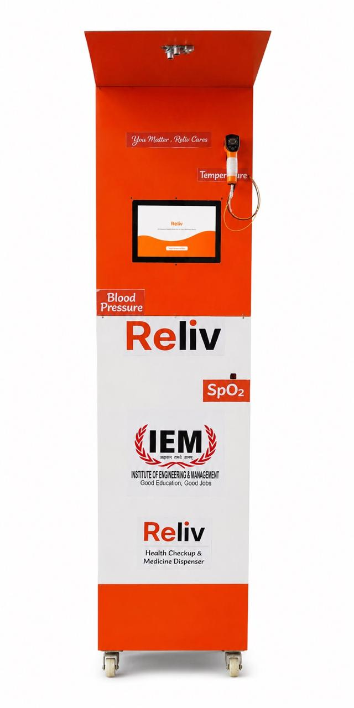
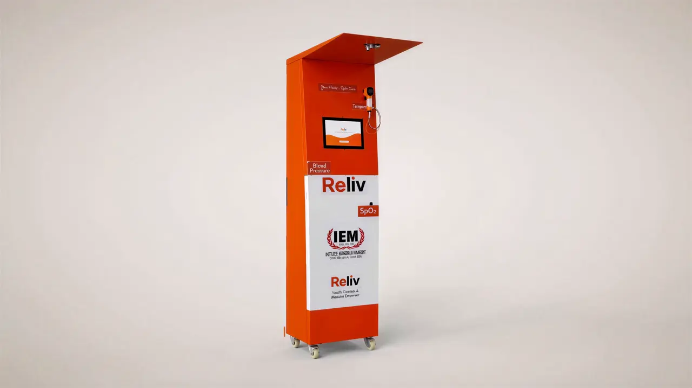
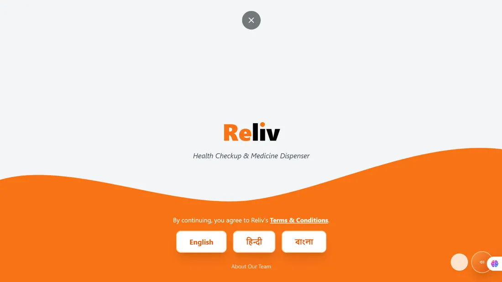
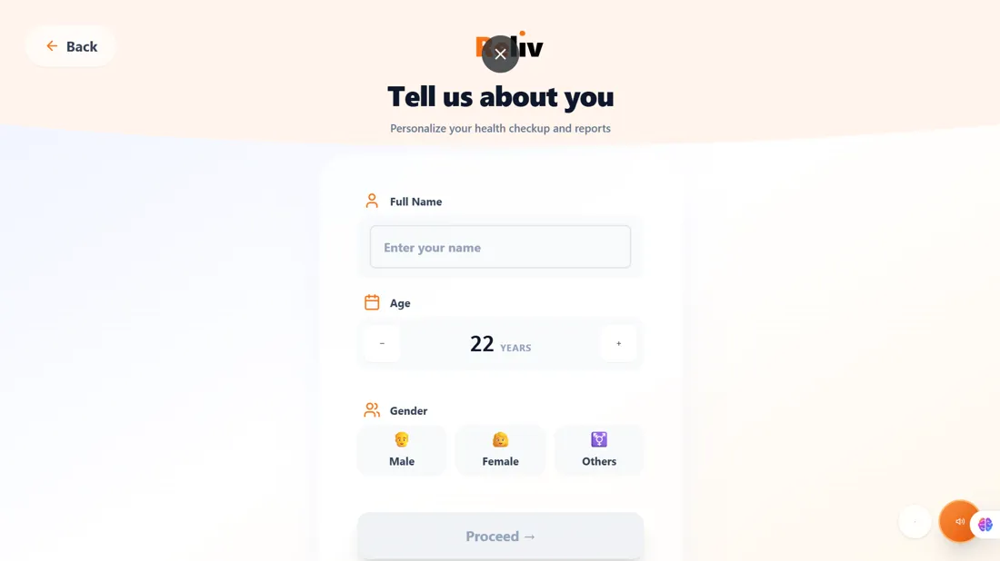
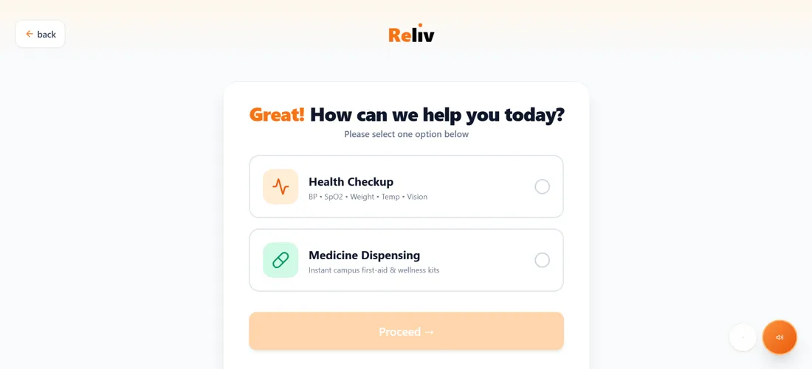

Choose your language
English, Hindi or Bengali. Follow the screen, with read-aloud guidance in natural voices.
THE RELIV HEALTH KIOSK & HEALTH ATM
Everyday health checks in 3 minutes. 100+ body parameters and vital monitoring. Meet Reliv, India's smart healthcare kiosk and Health ATM.
Your health. At your pace.

You matter. Reliv cares.A CLOSER LOOK AT RELIV HEALTH ATM
Skip film ↓
Scroll to explore the checks, one at a time.
HOW TO USE THE HEALTH ATM?
A language you know. Clear steps on screen. Natural voice guidance you can listen to.
English, Hindi or Bengali. Follow the screen, with read-aloud guidance in natural voices.
Enter your details or tap once for a sample profile. Non-invasive, private vital checkup.
Explore a 3-minute full health checkup or see how choosing an essential healthcare kit works.
An instant digital wellness report with QR code, or an automated medicine receipt.
YOUR TURN • SMART HEALTH KIOSK SIMULATOR
Choose a language on the actual Reliv welcome screen. Enter sample details, select your service, and follow the checkup or medicine journey. Use read-aloud for spoken guidance.



AT THE REAL HEALTH ATM
Follow an actual Reliv demonstration, from taking body-parameter measurements to viewing the details on the kiosk screen.
Actual Reliv demonstration • Smart Health ATM Kolkata • 1 min 38 sec
UNDERSTAND YOUR SUMMARY • DIGITAL HEALTH REPORT
Explore values from the supplied sample report. Select a reading to see what the label and unit mean, in everyday language.
An automated wellness summary, not a diagnosis or a medical report.
Values are transcribed from the supplied Reliv preview report. Definitions explain the labels; they do not validate the device or diagnose the sample user. Learn more from MedlinePlus about blood pressure and pulse oximetry.
THERE’S A PLACE FOR YOU HERE
Ask about Health ATM access, nearby kiosks, available services and current pricing.
Ask about a visit ↗02 / STUDENTSExplore opportunities in technology, design, IoT research and the Reliv team.
Connect with the team ↗03 / INVESTORSDiscuss the product, current progress, HealthTech innovation and growth plans for Reliv.
Request investor information ↗04 / BRANDS & ORGANISATIONSTalk about hosting a health kiosk at your gym, college campus or workplace.
Discuss a partnership ↗FIND A RELIV KIOSK NEAR YOU
Currently operating live kiosks in Kolkata. Expanding nationwide soon — don't worry, we're coming to your city & state!
Check your proximity to our flagship kiosk or view on Google Maps. If you're within 5 km, visit today for your checkup!
Sector V, Bidhannagar (Near IEM Gurukul Campus), Kolkata, West Bengal 700091
We are actively rolling out Health ATMs across India for colleges, universities, corporate offices, and fitness centers. Connect with us on WhatsApp to request a kiosk at your campus or workplace.
BUY • HOST • PARTNER • GYM & CAMPUS KIOSKS
Thinking about a Reliv smart health kiosk or Health ATM for your college campus, gym, workplace or hospital? Tell us what you have in mind.
FREQUENTLY ASKED QUESTIONS • HEALTH ATM & KIOSK
The Reliv Health Kiosk is a self-service Health ATM designed for colleges, gyms, workplaces, and public venues in India. It performs instant vital checks (blood pressure, pulse rate, oxygen saturation, temperature, and body composition) in 3 minutes with digital paperless reports.
No. This is an interactive demonstration with sample results. Actual measurements require the physical Reliv kiosk and its calibrated screening devices.
Reliv has a read-aloud option. Try spoken guidance in the sample session above. This demo selects a recognized female voice in English, Hindi, or Bengali when your browser provides one.
Where your browser supports it, tap the microphone button and allow access. Your browser may use an online speech service to transcribe your name. You can always type or use a sample profile instead.
No. Payment and dispensing are simulated. The receipt is labelled SAMPLE. Actual products, prices and availability must be confirmed at a real kiosk.
Yes, you can enquire about buying or hosting Reliv using the form above. The team will confirm the available configuration, price, installation needs and support arrangements for campuses, fitness centers, and workplaces in Kolkata and across India.
The sample includes blood pressure, heart rate, oxygen saturation (SpO2), temperature, height, weight, BMI, body-composition values, and preliminary vision entries.
No. It is an automated wellness summary, not a medical diagnosis, prescription or substitute for professional healthcare.
Follow @reliv_care on Instagram, message on WhatsApp at +91 91636 06455, or email khanfaizan3234@gmail.com.
Are you searching for Relive Health Kiosk? The correct brand name is Reliv. We are a student-led HealthTech startup from Kolkata building an innovative Health ATM and smart healthcare kiosk for colleges, offices, and public spaces across India.